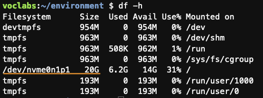

gl / es
AWS Batch
Actividad práctica sobre AWS Batch
Objetivo
El objetivo de esta actividad es comprobar de manera práctica los conceptos básicos del servicio AWS Batch.
Para realizar esta actividad vamos a usar como base este curso disponible en la plataforma AWS Workshop Studio. El curso solo está disponible en inglés, pero puedes ayudarte, p. ej., de la traducción automática integrada en tu navegador si lo necesitas.
Nota
Para realizar la actividad sigue las instrucciones del curso teniendo en cuenta a medida que avances las indicaciones que se te dan en esta página.
A continuación se recogen las indicaciones adicionales que tendrás que tener en cuenta en cada sección del ejemplo:
Workshop setup
Para realizar la actividad vamos a utilizar el Learner Lab de AWS Academy. No hagas lo que se indica en el curso, en su lugar sigue los pasos siguientes:
- Accede a la consola AWS desde tu cuenta del Learner Lab de AWS Academy.
- Accede a la consola del servicio Cloud9 y sigue los pasos indicados en este apartado del curso para crear un entorno Cloud9. Usa los valores indicados en el curso con las siguientes excepciones:
- En la propiedad Timeout de la sección New EC2 Instance elige 1 hora.
- En la sección Network settings elige la conexión Secure Shell (SSH).
- Accede al entorno Cloud9 lanzado en el paso anterior y haz lo siguiente:
- Instala JQ ejecutando en un terminal:
sudo yum -y install jq - Para poder crear imágenes Docker necesitamos un espacio de disco mayor al proporcionado por defecto por Cloud9. Para aumentar el espacio del disco duro a 20GB ejecuta:
curl -s https://micap-hpcn.github.io/assets/resize.sh | bash /dev/stdin 20 - Comprueba que ahora el tamaño del disco es de 20GB ejecutando:
df -h
- Instala JQ ejecutando en un terminal:
Imagen: tamaño del disco después de redimensionarlo a 20GB. 
Building a Docker container
En esta sección sigue los pasos del curso.
Set up AWS Batch resources
En esta sección sigue los pasos del curso teniendo en cuenta lo siguiente:
Set up a Compute Environment
- En el paso 6, en la propiedad Instance role elige LabInstanceProfile.
Set up a Job Definition
- En el paso 8, elige LabRole en las propiedades Execution role y Job role configuration.
Run batch jobs
En esta sección haz solo los dos primeros apartados (Run a single job y Run an array job) siguiendo los pasos del curso.
Nota
Actualiza la información de los trabajos y de sus logs a medida que se ejecuten presionando los botones que refrescan la información de la consola.
Optimize cost with EC2 Spot
Sáltate esta sección. El Learner Lab de AWS Academy no permite utilizar instancias EC2 de tipo spot.
Next steps and clean up
Sigue los pasos del apartado Clean up teniendo en cuenta lo siguiente:
- En el paso 5, desactiva el Compute environment antes de eliminarlo.
- No hagas los pasos 7 y 8: Empty the S3 bucket y Delete the CloudFormation stack.
Además, haz lo siguiente:
- En la consola de Cloud9 elimina el entorno MyCloud9Env.
Licencia

Actividad práctica sobre AWS Batch de Xoán C. Pardo tiene una licencia Creative Commons Reconocimiento-No comercial 4.0 Internacional.